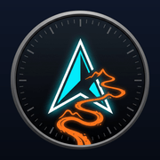

Notificació
DISTÀNCIA
0.0 km
DESNIVELL (+D)
+0 m
VEL. MITJANA
0.0 km/h
Descarrega les tessel·les de la ruta activa per navegar a la muntanya en Mode Avió o sense dades mòbils.
Tessel·les estimades:
~180
Mida estimada:
~6.5 MB
Cap waypoint definit a la ruta
0 girs detectats
0.0 km
Carregant indicadors de gir...

🚵 TrailGPS MTB v2.2
Ciclocomputador & Navegació GPX
Autoria & Desenvolupament
David Cordones · 2026
Llicència de Programari Lliure
• Codi Font: GNU AGPL v3
• Documentació: CC BY-SA 4.0
Lliure per utilitzar, compartir i replicar citant sempre l'autor original.
🔒 100% autònoma i privada · Sense telemetria ni servidors externs
📍 Toca aquí per activar la teva posició GPS real
⚠️
FORA DE RUTA!
A 45m del traçat GPX